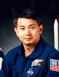

Lyndon B. Johnson Space Center
Houston, Texas 77058
|
National Aeronautics and Space Administration Lyndon B. Johnson Space Center Houston, Texas 77058 |
 |
Biographical Data |
||
Eugene H. Trinh (Ph.D.)
Payload Specialist
PERSONAL DATA: Born September 14, 1950, in Saigon,Vietnam; was raised from the age of two in Paris, France and has lived in the United States since 1968. Currently a resident of Culver City, California. Married to the former Yvette Fabry. Recreational interests include house remodeling, music, theatre, tennis, swimming, vollyball, soccer, hiking, and photography. His parents, Mr. and Mrs. Trinh, reside in Nice, France. Her parents, Mr. and Mrs. Fabry, reside in Paris, France.
EDUCATION: Secondary education: graduated from Lycee Michelet, Paris, France with a Baccalauret degree in 1968. Received a Bachelor of Science degree in Mechanical Engineering-Applied Physics from Columbia University in 1972; Masters of Science and of Philosophy and a Doctorate of Philosophy in Applied Physics from Yale University in 1974, 1975, and 1977 respectively.
ORGANIZATIONS: Acoustical Society of America, American Institute of Aeronautics and Astronautics, Sigma Xi Research Society, American Society of Mechanical Engineering, American Physical Society.
PUBLICATIONS: Published over 40 reviewed articles and authored as many conference papers in the areas of Fluid Dynamics, Acoustics, Materials Science, and Microgravity science and technology.
SPECIAL HONORS:
RESEARCH ACTIVITIES: 1979 - Present -- Physical acoustics, fluid dynamics and containerless materials processing. Development of high intensity acoustic levitation devices and experimental instrumentation and measurement techniques for fluid dynamics experiments as well as high temperature materials processing experiments in ground based laboratory and in low gravity. Development of shuttle flight experiments, and participation in both Spacelab flight mission support activities as well as flight crew training. Alternate Payload Specialist (APS) on Spacelab 3 mission (May 1985). Research Task Manager and Project Scientist for Drop Physics Module flight experiments. NASA investigator in Fluid Physics, Biotechnology, and Materials Science.
OTHER EXPERIENCE: Development and operation of low-gravity experimental apparatuses for tests in the NASA KC-135 airplane. An accumulated low gravity time of about 25 hours (at 0.05 G) has been obtained since 1983.
Dr. Trinh was a member of the crew of Space Shuttle Columbia for STS-50/United States Microgravity Laboratory-1 (USML-1) Spacelab mission.
APRIL 1996
{kind=link}